OpenFUSE · Native Rust editor
Keep your amp in play.
Edit legacy presets, organize your collection and explore the device workspace. A 30-second tour with real native interactions, close-ups and a quicker cut.
Three recorded native interaction sequences show real control and document changes. Device and practice chapters use annotated native screenshots. The original editorial soundtrack is synthesized for this video. USB scenes use the built-in simulator and audio settings use a synthetic inventory. No physical amplifier or amplifier sound was recorded. OpenFUSE does not emulate the amplifier's DSP.
Inside the native app
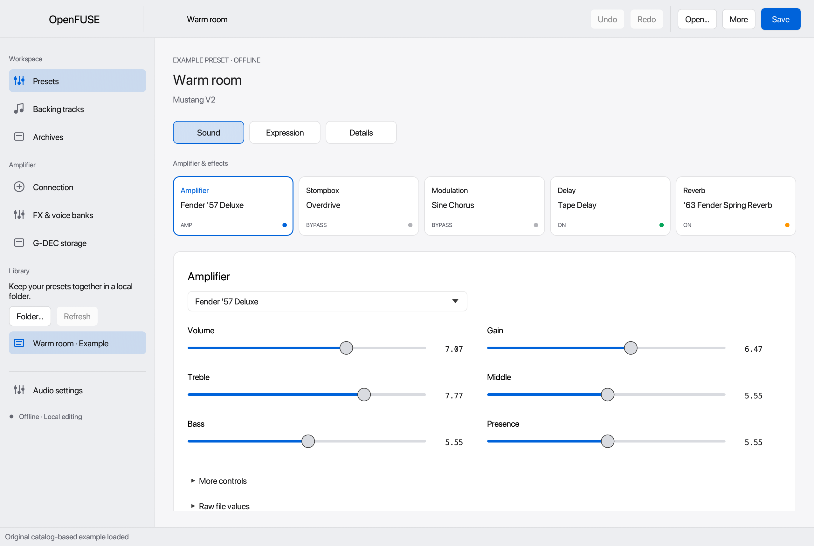
Models, parameter controls and effect chain. Independently authored example preset.
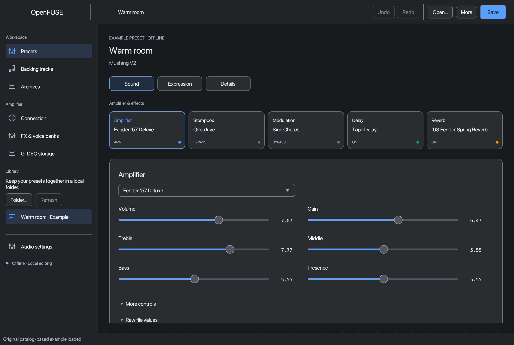
System, Light or Dark appearance, with semantic control colors.
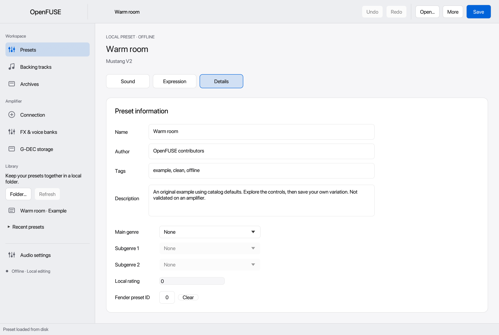
Details has its own inspector; sound controls remain focused.
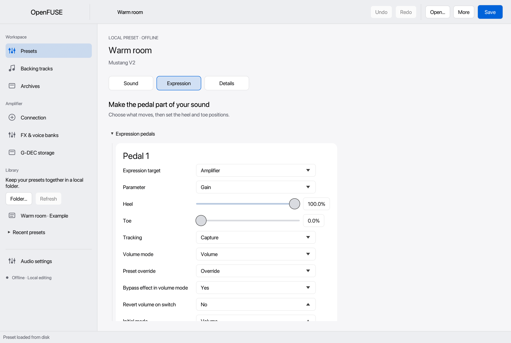
Expression pedal assignment with a reversed heel/toe range.
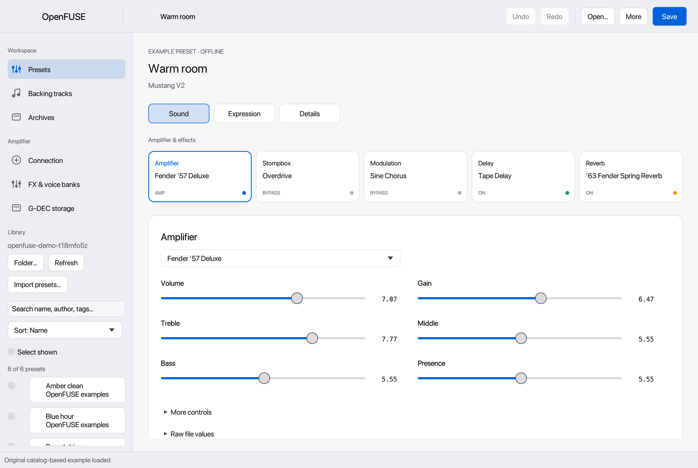
A local collection, using synthetic example presets.
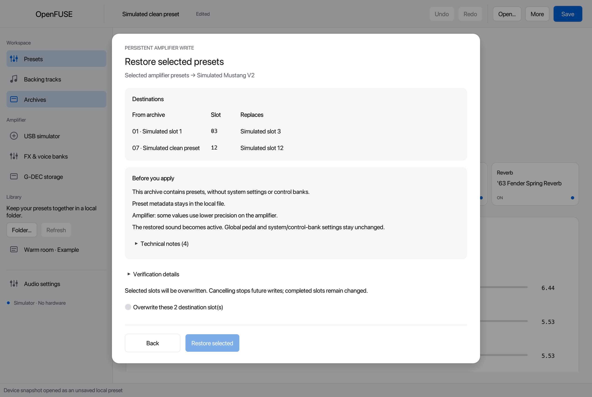
Selective restore preview. USB simulator.
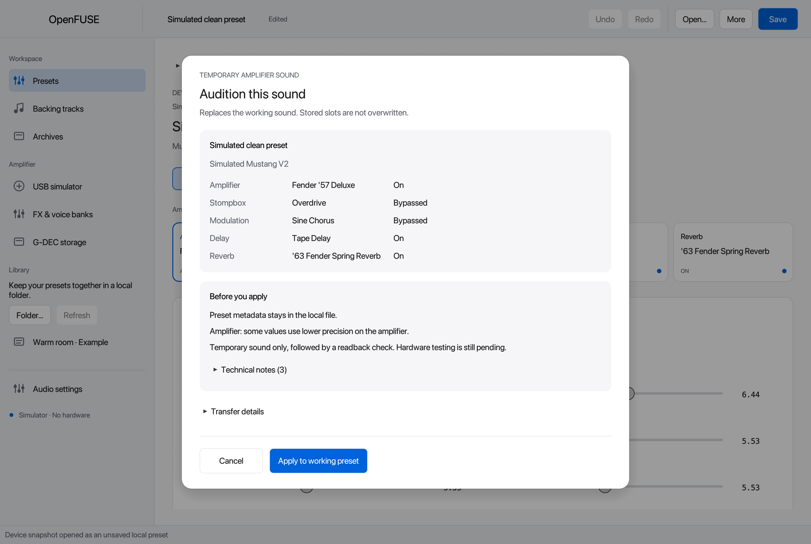
Temporary audition plan. USB simulator.
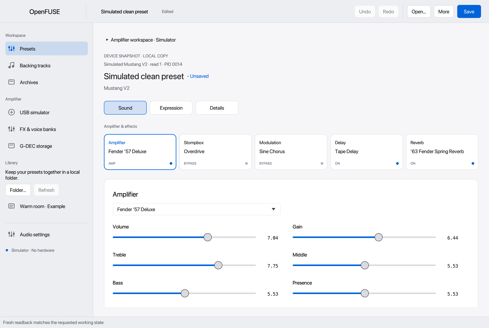
Readback verification against a simulated device.
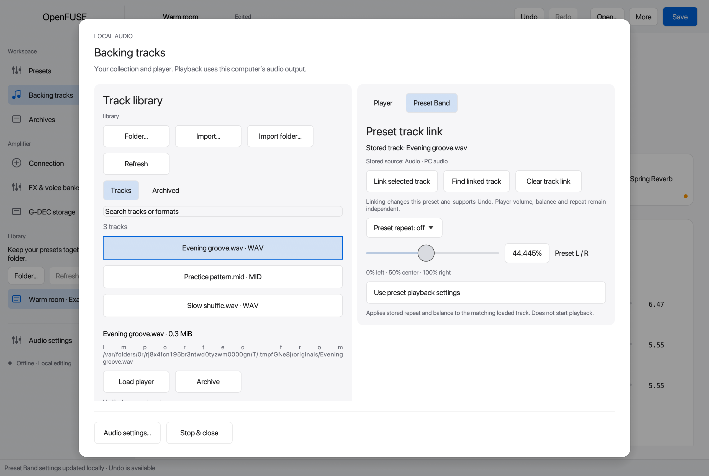
Backing tracks and local playback controls.
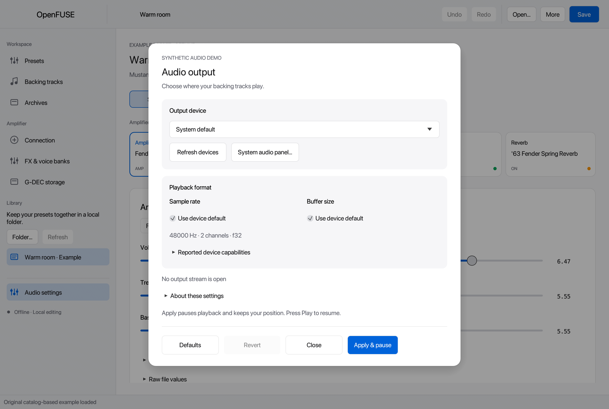
Computer audio settings with a synthetic device list.
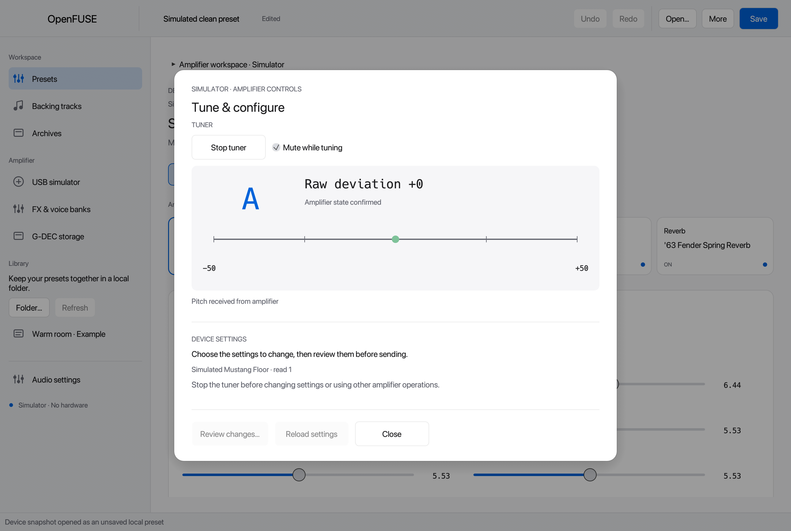
Tuner UI. Simulated pitch input, not a measured amplifier signal.
OpenFUSE is an experimental, AI-assisted project. No physical amplifier model is hardware-validated. Read the disclaimer. Video font notices: Inter and Space Grotesk.